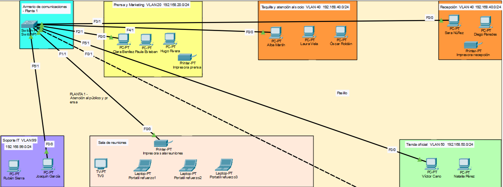
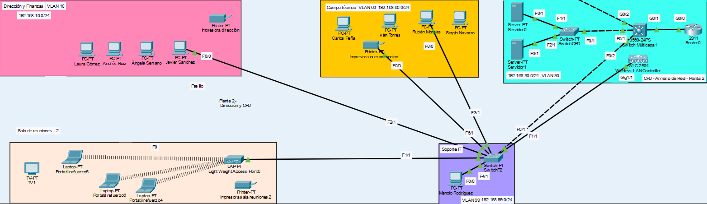

Mi proyecto
Este proyecto consiste en el diseño e implementación de una infraestructura IT completa para un club deportivo ficticio, planteado como un entorno similar al de una pequeña o mediana empresa. Se trata de un proyecto intermodular en el que se han trabajado de forma conjunta distintas áreas como hardware, redes, sistemas, bases de datos, lenguaje de marcas y computación en la nube.
El objetivo principal ha sido construir una solución tecnológica coherente, funcional y escalable, capaz de dar soporte a distintos departamentos del club, cubriendo tanto las necesidades de los usuarios como la parte de administración, conectividad, almacenamiento, servicios corporativos y publicación de recursos.
Explicación del proyecto
Se trata de un proyecto técnico en el que se plantea desde cero la infraestructura informática de una organización. Para ello, se ha definido el hardware necesario, se ha diseñado la red física y lógica, se ha implantado un entorno cliente-servidor, se ha creado una base de datos para gestionar los recursos tecnológicos y se ha ampliado la infraestructura con una arquitectura híbrida en la nube mediante AWS.
Además, también se ha desarrollado una representación estructurada del inventario tecnológico mediante XML, validado con DTD y transformado con XSLT a formato HTML, de forma que toda la información del sistema pueda mostrarse de una manera clara y organizada dentro de la intranet del proyecto.
Una de las partes más importantes del trabajo ha sido precisamente la relación entre los distintos módulos. La web desarrollada en Lenguaje de Marcas se ha integrado como intranet dentro del servidor web configurado en Implementación de Sistemas Operativos. A su vez, la base de datos diseñada en Gestión de Bases de Datos se ha planteado como parte de la infraestructura tecnológica del proyecto y su alojamiento se ha relacionado con la parte de Computación en la Nube, donde se propone el uso de Amazon RDS (MySQL) dentro de una arquitectura híbrida. Del mismo modo, todo el hardware definido en Fundamentos de Hardware se ha incorporado al inventario tecnológico representado en XML dentro del módulo de Lenguaje de Marcas. También existe una relación directa entre Planificación y Administración de Redes e Implementación de Sistemas Operativos, ya que la red segmentada mediante VLANs, la distribución por departamentos y la estructura del CPD sirven como base sobre la que se despliegan los servidores, los clientes y los distintos servicios corporativos.
Capturas del proyecto
A continuación se incluyen algunas capturas representativas del proyecto.




Tecnologías utilizadas
Hardware e infraestructura
- Equipos corporativos de sobremesa
- Workstations
- Portátiles profesionales
- Servidor principal
- Switch multicapa
- Switches de acceso
- Router
- Puntos de acceso WiFi
- SAI
- RAID 5
Redes
- Cisco Packet Tracer
- VLANs
- Enrutamiento inter-VLAN
- Enlaces trunk
- WiFi corporativa e invitados
- Segmentación lógica por departamentos
Sistemas
- Windows Server 2022
- Windows 11 Pro
- Ubuntu Desktop
- Kali Linux
- VirtualBox
- Active Directory
- DNS
- Servidor de archivos
- Servidor de impresión
- FTP
- IIS
- RDP
- PowerShell
Bases de datos y nube
- MySQL / MariaDB
- SQL
- phpMyAdmin
- AWS
- Amazon EC2
- Amazon S3
- Amazon RDS (MySQL)
- Amazon VPC
- Apache
- AWS CLI
Lenguaje de marcas
- XML
- DTD
- XSLT
- HTML
- CSS
Aprendizajes del proyecto
El desarrollo de este proyecto me ha permitido entender de una forma mucho más práctica cómo se diseña, organiza e implanta una infraestructura IT completa.
He aprendido a relacionar áreas que en otros contextos suelen verse por separado, como el hardware, la red, los sistemas, los servicios corporativos, las bases de datos y la nube. Gracias a ello, he podido ver cómo cada parte influye en las demás y cómo todas deben encajar para que el sistema funcione de forma coherente.
También he reforzado conocimientos en administración de sistemas, especialmente en el uso de Active Directory, la gestión de usuarios y permisos, la implantación de servicios de red y la organización de un entorno cliente-servidor. En la parte de redes, he comprendido mejor la importancia de la segmentación mediante VLANs y la estructura de una red empresarial.
Además, este proyecto me ha servido para descubrir que, aparte de la ciberseguridad, también me interesa el trabajo relacionado con bases de datos y análisis de datos, ya que la parte de modelado, organización de la información y consultas me ha resultado bastante interesante.
Por último, una de las partes más importantes que me llevo del proyecto es la mejora en la resolución de problemas, ya que al trabajar una infraestructura tan amplia han ido apareciendo errores e incidencias que me han obligado a investigar, probar soluciones y entender mejor el funcionamiento real de cada tecnología utilizada.
Repositorio
En este enlace se puede consultar el repositorio del proyecto y su documentación: